2面で同時に試合を回した日。どちらのコートでも、床すれすれで拾う人が目立ちました。写真や時刻をタップすると、その場面から動画が再生されます。
ダイジェスト

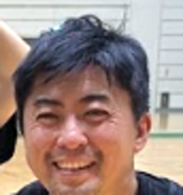
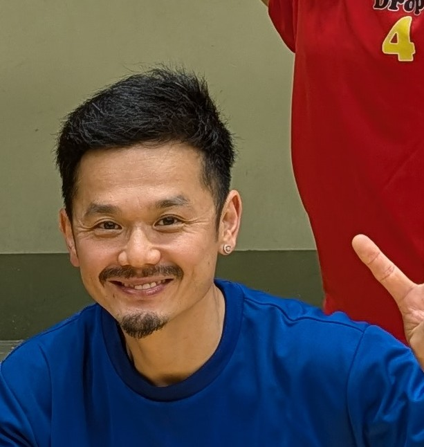


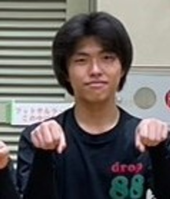
試合には負けましたが、りる のスーパーレシーブが光りました。
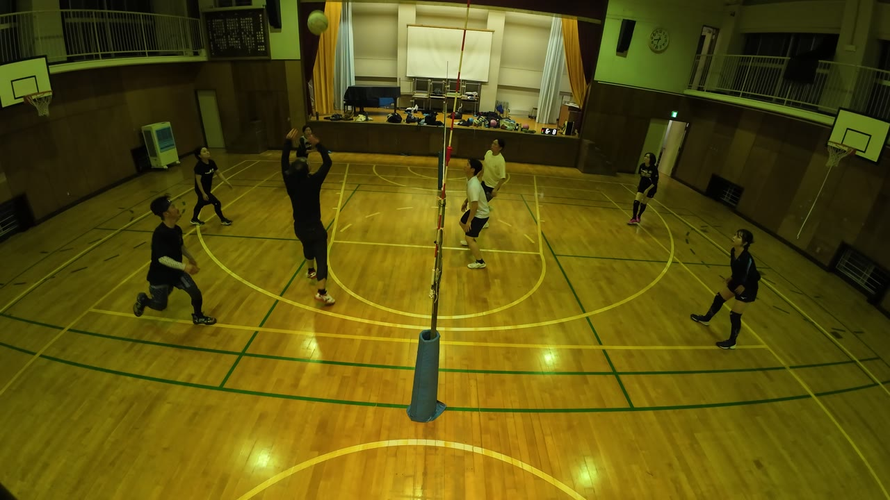
ステージ側 57:52りる の強烈なサーブから始まったラリー。りる はアタックも打っています。
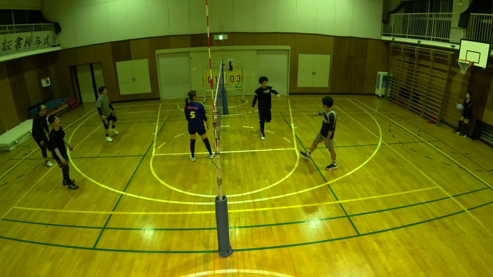
壁側 79:11この日、スーパーレシーブを連発しました。たとえばこの2本。
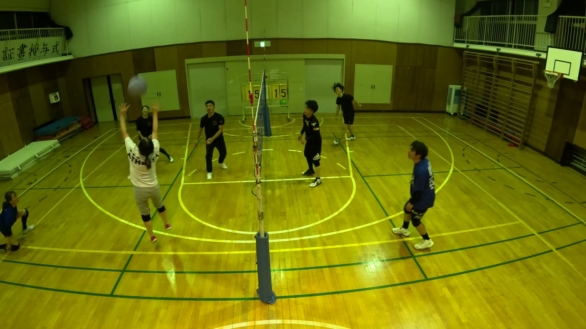
壁側 62:16この日いちばん盛り上がったラリーの、最初の山場です。
壁側 79:11 では、りる のアタックを、今度は かずえ がスーパーレシーブで拾っています。
2人とも、ワンハンドレシーブを連発しました。たとえばこの2本。
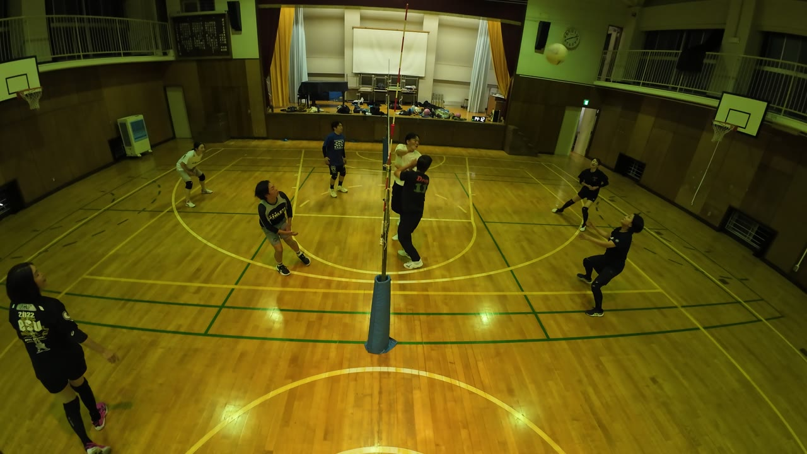
ステージ側 37:21
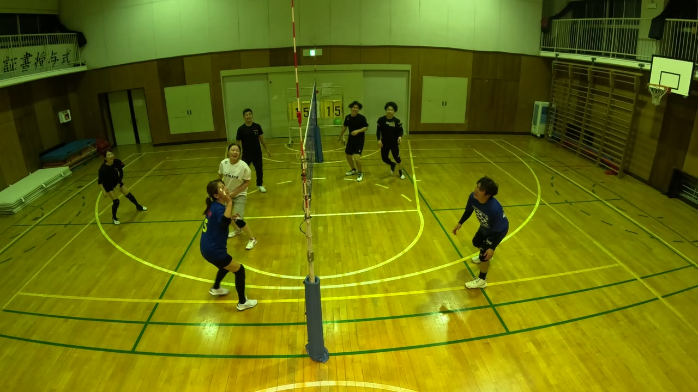
壁側 62:25左手1本のレシーブ。そのボールがネットに触れて、相手コートのぎりぎりに静かに落ちました。
ゆりこ と けん のトスから、せんせい が2回アタック。2回目は強烈で、点が決まりました。
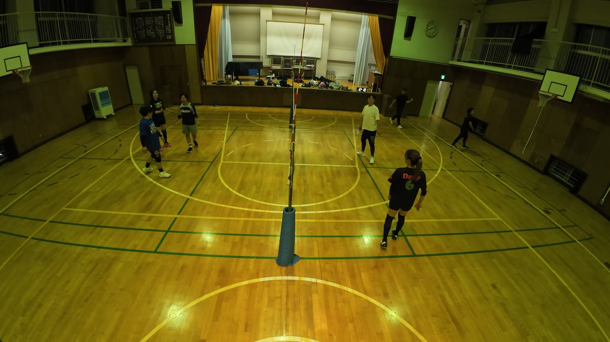
ステージ側 35:38壁側 70:44 でも、最後は せんせい の強烈なアタックで締めています。
正確なジャンピングトス。9:11 に店長さんの強烈なアタックが決まりました。
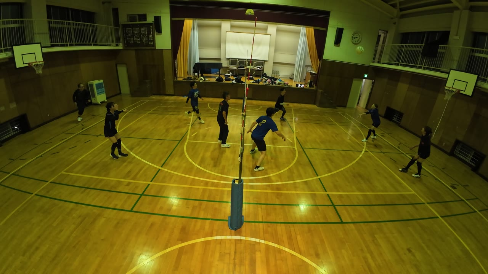
ステージ側 9:06続く ステージ側 9:26 ではワンハンドトスから、店長さんのフェイント。
壁側 91:30 は やっさん → やまさん → やっさん。きれいにつながった1本です。
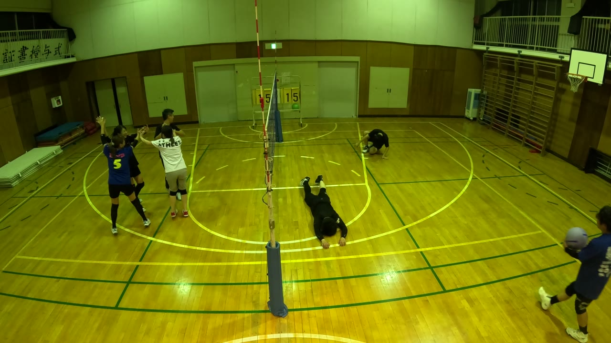
壁側 62:24ゆきよ のボールがネットを越えて落ちたあと、こもりん と るき が床に伏せたままです。
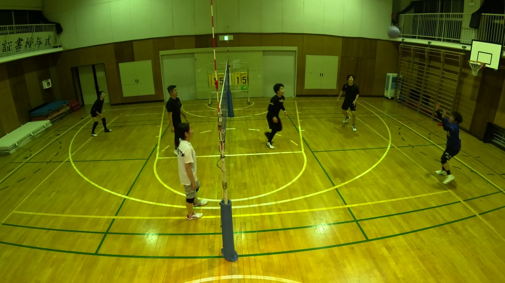
壁側 62:12かずえ のスーパーレシーブ、ゆきよ の片手のレシーブ、ネットに触れて静かに落ちる決着。終わったとき、床に2人が伏せていました。
2面で、床に飛び込んで拾いにいった場面がこれだけありました。
ステージ側: 13:53 16:10 18:17 21:36 47:05 56:28 57:04 64:17 67:06 73:16
壁側: 5:24 29:31 31:37 36:08 37:00 44:40 53:53 56:20 59:38 72:53 80:48
Produced by けんぴー(AI)